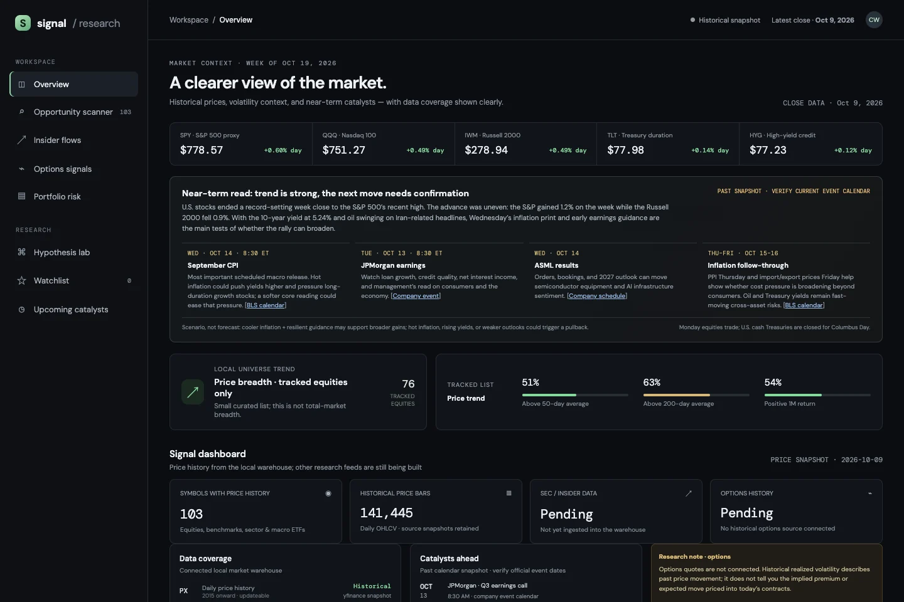
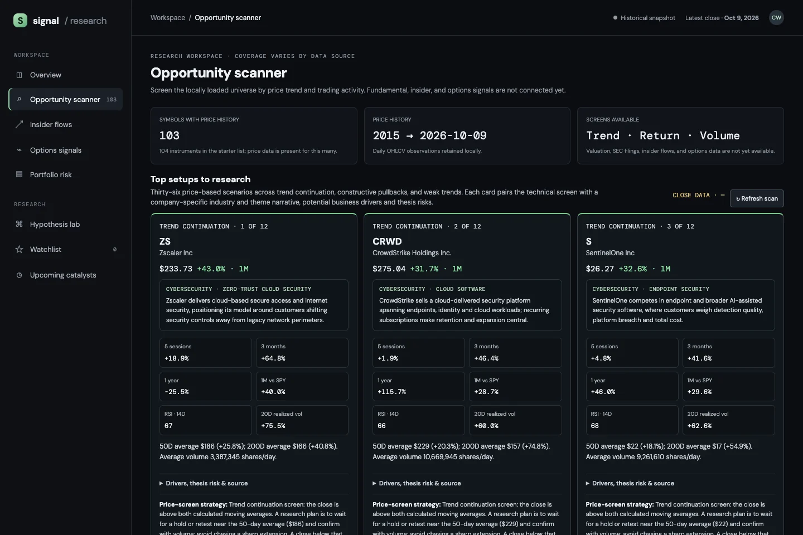
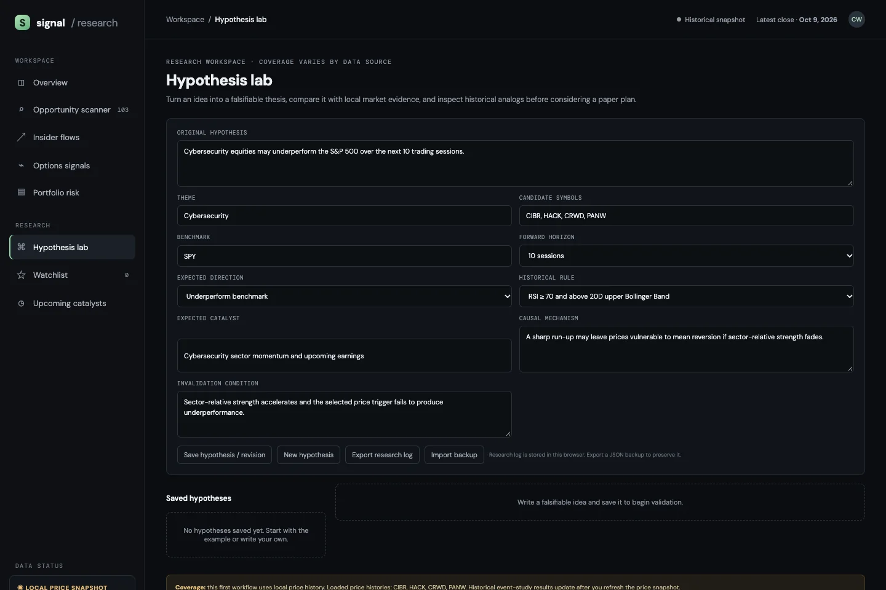
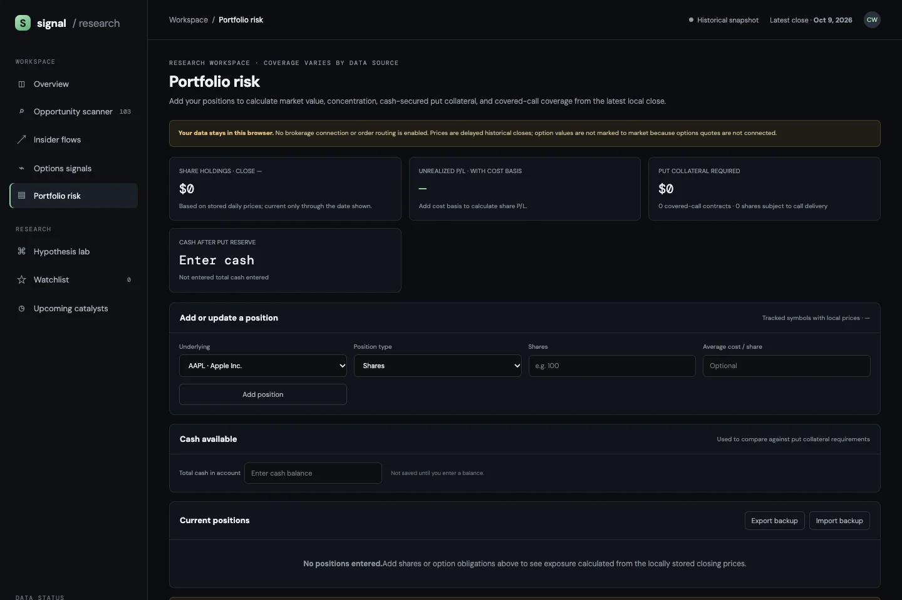

Market Intelligence
A local market research dashboard with stock screens, hypothesis tracking, and manual portfolio analysis.
PythonDuckDBJavaScript
Local data storage, dated source snapshots, and calculations that can be inspected.
Project details
- Purpose
- Brings historical prices, company context, and saved research into one workspace.
- Implementation
- A local DuckDB warehouse retains dated observations and ingestion provenance. The browser reads exported snapshots and provides transparent screens, versioned hypothesis logs, and local portfolio inputs.
- Current boundary
- Research-only historical snapshots. No broker or trade execution; option chains, implied volatility, and option mark-to-market are not connected.